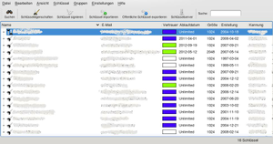

KGpg
Dieser Artikel wurde für die folgenden Ubuntu-Versionen getestet:
Ubuntu 14.04 Trusty Tahr
Zum Verständnis dieses Artikels sind folgende Seiten hilfreich:
KGpg  ist ein grafisches Frontend für das Verschlüsselungsprogramm GnuPG, mit dem sich das GnuPG-Schlüsselbund verwalten sowie eigene GnuPG-Schlüssel erstellen lassen. Das Programm ist Bestandteil des KDE-Desktops. Nähere Informationen zu GnuPG bzw. den Verschlüsselungstechniken, die dahinter stecken, erhält man in den Artikeln GnuPG und GnuPG/Technischer Hintergrund.
ist ein grafisches Frontend für das Verschlüsselungsprogramm GnuPG, mit dem sich das GnuPG-Schlüsselbund verwalten sowie eigene GnuPG-Schlüssel erstellen lassen. Das Programm ist Bestandteil des KDE-Desktops. Nähere Informationen zu GnuPG bzw. den Verschlüsselungstechniken, die dahinter stecken, erhält man in den Artikeln GnuPG und GnuPG/Technischer Hintergrund.
Installation¶
KGpg kann über das folgende Paket installiert werden [1]:
kgpg (ab Ubuntu 13.04 in universe)
 mit apturl
mit apturl
Paketliste zum Kopieren:
sudo apt-get install kgpg
sudo aptitude install kgpg
Nach dem Start von KGpg erscheint im Systemabschnitt der Kontrollleiste ein Miniprogramm. Durch einen Klick mit der  Maustaste erscheint das Fenster zur Schlüsselverwaltung, durch einen Klick mit der
Maustaste erscheint das Fenster zur Schlüsselverwaltung, durch einen Klick mit der  Maustaste erscheint ein Menü mit den wichtigsten Befehlen.
Maustaste erscheint ein Menü mit den wichtigsten Befehlen.
Bei anderen Desktop-Umgebungen mit einem Anwendungsmenü findet man das Programm unter "Zubehör -> KGpg".
|  |
| KGpg |
Schlüsselpaar erzeugen¶
Um ein eigenes Schlüsselpaar zu erzeugen, startet man KGpg und wählt die Menüoption "Schlüssel -> Schlüsselpaar generieren" oder betätigt die Tasten Strg + N . Im folgenden Dialogfenster werden ein paar Informationen benötigt:
Name
E-Mail
Kommentar (optional)
Dauer der Gültigkeit
Stärke des Schlüssels
Schlüsseltyp
Folgendes sollte man hier beachten:
Name, E-Mail und Kommentar können frei ausgefüllt werden. Bei der Dauer der Gültigkeit sollte man einen Wert von ca. 1 Jahr wählen, das kann aber ebenfalls nach Belieben anders gesetzt werden. Eine vernünftige Stärke des Schlüssels für E-Mails ist 2048. Es sollte "DSA & ElGamal" gewählt werden.
Als nächstes folgt die Eingabe des Passwortes. Es ist sinnvoll, ein sehr starkes Passwort zu wählen (mindestens 8 Zeichen). Die Stärke des Passwortes wird mit dem Balken unterhalb der Eingabe signalisiert.
Nun wird das Schlüsselpaar erzeugt. Durch Bewegung der Maus unterstützt man KGpg bei der Zufallsberechnung des Schlüssels, dies ist aber nicht zwingend erforderlich.
Es ist sehr zu empfehlen, ein Sperrzertifikat zu erstellen, dazu Pfad für die Datei angeben. Mit diesem Zertifikat kann der Schlüssel unbrauchbar gemacht werden, sollte er einmal gestohlen oder kompromittiert werden. Dieses Zertifikat sollte man sehr gut aufbewahren (z.B. auch Ausdrucken), und ebenso sorgfältig damit umgehen, wie mit dem privaten Schlüssel.
Schlüssel exportieren¶
Damit Kommunikationspartner ihre E-Mails verschlüsseln und mit dem geheimen Schlüssel erstellte Signaturen prüfen können, brauchen sie den öffentlichen Schlüssel des Schlüsselpaares. Dazu wählt man den eigenen Schlüssel aus und öffnet das Kontextmenü mit der Maustaste und wählt "Öffentliche Schlüssel exportieren". Alternativ kann der Dialog auch mit dem Tastenkürzel
Strg +
C geöffnet werden. Hier kann der Schlüssel in verschiedenen Formen exportiert werden. Am besten eignet sich eine Datei, welche man via E-Mail oder mit einem USB-Stick dem Partner übergeben kann.
Schlüssel importieren¶
Bekommt man nun einen öffentlichen Schlüssel von einem Partner als Datei, so kann man den ebenfalls via KGpg importieren. Dazu das Menü "Schlüssel importieren" oder Strg + V benutzen, und die entsprechende Datei auswählen. Das Importieren aus dem Inhalt der Zwischenablage ist hiermit auch möglich.
Schlüssel signieren¶
Hat man den öffentlichen Schlüssel eines Partners importiert, so kann man diesen signieren. Damit bestätigt man, dass der Schlüssel wirklich zur Person gehört, unter deren Namen er eingetragen ist. Damit wird die Glaubwürdigkeit des Schlüssels verstärkt.
Achtung!
Schlüssel bitte nur signieren, wenn die Zugehörigkeit des Schlüssels zum Inhaber zweifelsfrei durch Vergleich des digitalen Fingerabdrucks des Schlüssels gesichert ist. Dieser sollte über ein anderes Kommunikationsmedium (Telefon, persönliches Treffen) abgeglichen werden.
Schlüssel widerrufen/sperren¶
Sollte es einmal passieren, dass der eigene Schlüssel gestohlen oder kompromittiert wurde, so sollte man den Schlüssel dringend widerrufen. Dadurch wird der öffentliche Schlüssel unbrauchbar gemacht. Ist ein entsprechendes Sperrzertifikat bereits vorhanden, so muss dieses einfach importiert werden, ganz analog zum Importieren eines öffentlichen Schlüssels. Muss ein Sperrzertifikat erst noch erstellt werden, so kann dies über das Kontextmenü des entsprechenden Schlüssels und Auswahl von "Schlüssel sperren..." erfolgen. Das im Folgenden erzeugte Zertifikat kann direkt automatisch importiert werden, wenn die Option "In Schlüsselring importieren" aktiviert wird.
Hinweis:
Es ist ratsam, gleich bei der Schlüsselerzeugung ein entsprechendes Widerrufszertifikat zu erstellen und sicher zu verwahren. Nach einem Verlust des geheimen Schlüssels ist ein nachträgliches Erstellen des Widerrufs nämlich nicht mehr möglich.
Probleme und Lösungen¶
Der gpg-agent lässt sich nicht starten¶
Unter "Einstellungen -> KGpg einrichten -> GnuPg Einstellungen" lässt sich normalerweise der GPG-Agent aktivieren. Die Einstellung bleibt jedoch nicht erhalten.
Lösung: In der gleichen Ansicht im Feld "Ordner für GnuPG" den Schalter "Ändern" betätigen und im anschließenden Dialog nichts auswählen, sondern gleich auf "OK" klicken. Anschließend wird eine Konfigurationsdatei angelegt und man kann nun das Häkchen bei "GnuPG-Agenten benutzen" aktivieren.

- Erstellt mit Inyoka
-
 2004 – 2017 ubuntuusers.de • Einige Rechte vorbehalten
2004 – 2017 ubuntuusers.de • Einige Rechte vorbehalten
Lizenz • Kontakt • Datenschutz • Impressum • Serverstatus -
Serverhousing gespendet von